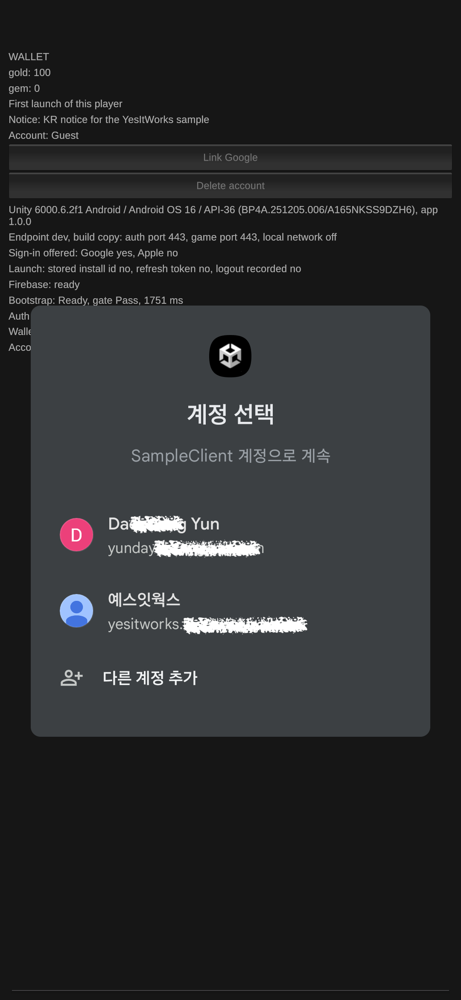
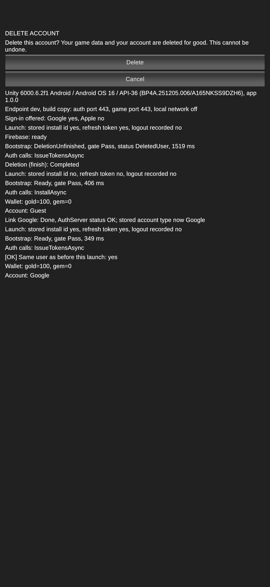

작업 목표
앞 단계까지 샘플 클라이언트는 게스트 계정으로 설치 → 로그인 → 게임 입장 → 지갑 조회까지 실기기에서 동작했다. 이번 단계의 목표는 그 위에 소셜 계정을 얹는 것이었다. Google과 Apple로 로그인하고, 게스트 계정을 소셜 계정에 연결하고, 그 소셜 계정에 이미 다른 게임 계정이 있으면 전환을 제안하고, 로그아웃과 계정 삭제까지 실제 기기와 실제 서버에서 끝까지 돌리는 것. 계정 삭제에는 Apple의 규칙 하나가 더 붙는다. Sign in with Apple을 쓰는 앱은 계정을 지울 때 사용자의 Apple 토큰도 폐기해야 한다.
작업 결과
샘플 클라이언트에 로그인, 연결, 전환 제안, 삭제, 시작 화면을 붙였고, 개발 서버에 새 빌드를 배포한 뒤 Android와 iOS에서 네 번의 세션을 돌려 24개 사례를 모두 통과했다. Apple 계정 삭제는 토큰 폐기 → 서버 삭제 순서로 끝났고, Apple 계정 설정의 앱 목록에서 샘플 앱이 사라지는 것으로 폐기를 확인했다.


네 번의 세션에서 돌린 사례가 모두 기대한 로그와 서버 상태로 끝났다.
Galaxy A16(Android 16)과 iPhone X(iOS 16)에서 개발 서버와 로컬 서버를 상대로 실행했다.
Apple 로그인 실패의 가설 셋이 차례로 틀렸고, 원인은 Firebase 호출의 인자 하나였다.
화면과 삭제 단계 모델, 토큰 검사, 로그 줄에 테스트를 붙이며 하루 사이에 늘었다.
Apple 로그인은 세 번 틀리고 한 번 맞았다
첫날 저녁, iPhone X에서 Apple 로그인은 시트가 뜨고 「계속」을 눌러도 실패로 끝났다. 가설이 셋 나왔다. 모두 그럴듯했고, 모두 틀렸다.
증상: 시트까지는 정상, 그 뒤 실패
가설 1처음 받은 진단은 앱이 이름과 이메일 공유 범위를 요청해서 iOS가 거부했다는 것이었다. 범위를 빼고 다시 빌드해도 결과는 같았다.
서명이 오래됐다?
가설 2Sign in with Apple 권한이 빌드에 빠졌을 가능성을 Xcode 화면이 아니라 서명된 바이너리와 프로비저닝 프로파일을 직접 읽어 배제했다. 권한은 들어 있었다.
Apple 백엔드 반영 지연?
가설 3그날 켠 설정이 Apple의 인증 백엔드에 반영되려면 몇 시간이 걸린다는 개발자 포럼 사례와 타임라인이 맞았다. 내일 아침까지 기다리자는 결론까지 갔다.
대조 실험 하나가 가설을 모두 치웠다
10분같은 폰, 같은 Apple ID, 같은 Wi-Fi에서 출시작 「흰둥이는 퐁퐁퐁」의 Apple 로그인은 완료됐다. 기기, 계정, 네트워크, Apple은 모두 무죄였다. 남는 건 우리 앱 안이었다.
실패 지점을 로그에 드러냈다
로그어댑터가 단계별로 실패를 한 줄씩 적게 하자 답이 나왔다. Apple은 자격 증명을 정상으로 돌려줬고, Firebase가 그 토큰을 거부하고 있었다. Firebase 호출 직전에 토큰의 모양(세 부분, 서명 알고리즘, 대상 번들 ID, 만료, nonce 일치)을 한 줄로 찍는 검사도 붙였다. 토큰은 멀쩡했다.
원인은 인자 하나
수정Firebase의 Unity 예제는 Apple 자격 증명을 만들 때 ID 토큰, nonce와 함께 Apple이 준 authorization code를 네 번째 인자로 넘긴다. 우리 어댑터는 넘기지 않았다. 코드를 넣자 그 자리에서 연결이 성공했다.
토큰 폐기를 삭제 앞에 두어도 삭제는 끝났다
Apple은 Sign in with Apple을 쓰는 앱이 계정을 지울 때 사용자의 토큰을 폐기하라고 요구한다. 폐기에는 로그인 때 받은 일회용 authorization code가 필요한데, 서버의 계정 삭제 뒤에는 이미 로그아웃된 상태라 그 코드를 쓸 수 없다. 그래서 순서를 폐기 → 서버 삭제로 두었다. 위험은 하나였다. 폐기가 Firebase 세션까지 끊어 버리면 서버 삭제가 영영 불가능해진다. 실기기 검증의 첫 번째 질문이 이것이었다.
재인증
삭제 직전에 Apple 시트로 다시 로그인해 새 토큰과 authorization code를 받는다.
게임 데이터 삭제
게임 서버의 프로필과 지갑을 지운다. 여기서 끊기면 「미완료 삭제」로 남는다.
Apple 토큰 폐기
Firebase를 통해 Apple에 폐기를 요청한다. 10초 제한, 실패해도 삭제는 계속, 화면에는 진행 표시.
계정 삭제
인증 서버의 계정을 지우고 로그아웃한 뒤 시작 화면으로. 새 게스트는 사용자가 시작할 때만 만든다.
폐기 뒤에도 세션은 살아 있었다
폐기 호출은 1.2초에 끝났고 바로 이어진 서버의 계정 삭제가 성공했다. 걱정했던 「폐기가 세션을 끊는다」는 일어나지 않았다. 같은 authorization code를 로그인과 폐기에 두 번 썼는데, Apple의 코드는 일회용이지만 Firebase가 로그인 때 그 코드를 소비하지 않았다.
증거는 시트가 아니라 설정의 앱 목록
폐기 뒤에도 Apple은 짧은 「로그인하겠습니까?」 시트를 계속 보여 줬고, 15분 뒤 앱을 껐다 켜도 같았다. 반면 설정 → Apple ID → Apple로 로그인 목록에서 샘플 앱은 사라져 있었다. 폐기 여부의 증거는 목록이고, 시트의 모양은 아니다.
폐기해도 사용자 식별자는 그대로
설정에서 앱 사용을 중단(폐기)한 뒤 다시 Apple로 로그인하면 같은 게임 계정에 도달했고, 서버의 사용자 수는 늘지 않았다. 폐기가 Apple 쪽 식별자를 바꾸지 않는다는 뜻이다.
끝나지 못한 삭제도 마무리된다
게임 데이터는 지워졌는데 계정 삭제는 안 끝난 상태를 서버 쪽에서 만들어 두고 앱을 다시 실행하면, 앱은 「삭제 마무리」를 제안했다. 재인증 → 두 번째 폐기 → 계정 삭제로 끝났고 서버는 같은 계정을 지웠다.
네 번의 세션, 24개 사례
세션마다 사례의 시작 상태, 조작, 기대하는 로그 줄과 서버 상태를 미리 적어 두었다. 서버 상태(토큰 만료, 비활성 · 삭제된 계정, 지워진 프로필)는 개발 데이터베이스에 SQL로 만들었고, 사례마다 변경 전 · 바뀐 행 수 · 변경 후를 찍게 해 사람이 확인하고 넘어갔다.
Android · 개발 서버 · 9사례
약 45분게스트는 로그아웃할 수 없다 · Google 연결 · 로그아웃 뒤 재실행은 로그인 화면(게스트 로그인 없음) · 이미 연결된 Google 계정으로 연결하면 전환 제안, 전환은 두 번째 시트 없이 · 토큰이 만료된 소셜 계정은 로그인 화면 · 비활성 계정 안내 · 미완료 삭제 마무리 · 처음부터 끝까지 삭제 · 삭제된 계정 안내. Claude Code가 adb로 실행, 버튼 탭, 재실행, 로그 수집, 판정을 모두 맡았고, 사람은 Google 계정 선택 시트를 누르고 SQL을 실행했다.
iPhone · 개발 서버 · 7사례
약 40분Google은 iOS SDK 경로가 필요한 것만(연결, 로그아웃 · 로그인, 삭제), Apple은 연결, 로그아웃 · 재실행 · 로그인, 폐기 뒤 같은 계정, 미완료 삭제 마무리. iOS 16 기기는 Xcode 밖에서 콘솔을 붙일 수 없어 사람이 탭하고 Xcode 콘솔을 붙여 넣었고, 판정은 Claude Code가 했다.
iPhone · 로컬 서버 · 4사례
15분4초 걸리는 호출을 보내자마자 홈으로 나가 10초, 60초, 90초 뒤 돌아왔다. 끊긴 호출은 DeadlineExceeded로 끝나고 복귀 즉시 한 번 더 시도해 스스로 OK로 끝났다. 앞 단계에서 Retry 버튼으로 끝나던 자리다. 정지해 있던 시간은 재시도 예산에서 빠진다. 쓰기 호출은 자동 반복 없이 수동 재시도를 제안했는데, 서버에는 이미 한 번 적용돼 있었다.
Android · 셀룰러 · 테스트 윈도우
4분 50초호출이 시작되는 순간 Wi-Fi를 끊자 안전한 호출은 모바일 데이터로 자동 재시도해 성공했고, 쓰기는 수동 재시도였다. 개발 서버의 테스트 컨트롤은 사람이 열고 닫는 시간 구간에서만 켜지고, 열려 있는 동안은 공개 점검 스크립트가 일부러 실패한다. 닫은 뒤 점검이 다시 통과했다.
검증하면서 알게 된 것
모두 통과했지만 설계와 문서에 바로 반영할 내용이 여럿 나왔다.
Firebase의 Apple 자격 증명에는 authorization code가 필요했다
ID 토큰과 nonce가 모두 맞아도 네 번째 인자 없이는 「Invalid OAuth response from apple.com」으로 거부됐다. 문서 예제와 똑같이 넘기자 통과했고, 같은 코드가 폐기에도 그대로 쓰였다.
취소와 거부는 같은 코드로 온다
Apple은 사용자가 시트를 닫은 경우와 자신이 로그인을 거부한 경우에 같은 코드를 준다. 클라이언트는 둘을 구분할 수 없으므로 게임은 「취소하셨습니다」 대신 「완료되지 않았습니다」라고만 말하기로 했다.
폐기의 증거는 설정의 앱 목록이다
폐기 뒤에도 Apple의 로그인 시트는 짧은 모양을 유지했다. 기술 문서를 읽고 세운 「폐기 뒤에는 최초 승인 시트가 다시 나온다」는 기대를 지우고, 앱 목록을 증거로 삼도록 문서를 고쳤다.
일시 정지는 호출을 끊지만 세션은 끊지 않는다
iOS에서 정지 중 응답을 잃은 호출은 복귀 시점에 DeadlineExceeded로 끝난다. 안전한 호출은 한 번 더, 쓰기는 사람에게 묻는다. 응답을 잃은 쓰기가 서버에는 적용돼 있었기 때문에 다음 단계의 요청 ID가 필요하다.
로그인 시트는 자동화할 수 없다
Google 계정 선택과 Apple 시트는 시스템 UI라 adb로도 누를 수 없다. 샘플이 버튼 좌표를 로그에 남기게 한 덕에 그 밖의 모든 조작은 자동화됐고, 사람의 손은 시트 탭과 SQL 실행에만 들어갔다.
설정 파일이 없는 빌드는 Firebase 오류 세 줄을 찍고 계속 간다
로컬 서버용 빌드에는 Firebase 설정이 없어도 되는데, 시작할 때 Firebase가 자체 오류를 세 줄 남긴다. 앱은 정상 동작하므로 소음으로 기록만 했다.
Claude Code가 폰을 운전하고, 사람은 시트를 눌렀다
앞 단계처럼 설계 대화와 실행을 나눴다. 방향과 승인은 대화로 정했고, 화면 구현과 빌드, 테스트, 세션 운전은 Claude Code에게 맡겼다. 밤에는 화면 다섯 묶음을 혼자 만들고 검증하게 두었고, 아침에 보고서를 읽고 세션을 시작했다. 세션에서는 Claude Code가 사례마다 판정을 보고서 형식으로 적고 「다음에 할 일」을 한 줄로 요청했으며, 사람은 그 한 줄만 처리하고 「done」을 보냈다.
AI 에이전트가 맡은 일
- 로그인 · 연결 · 전환 · 삭제 · 시작 화면과 삭제 단계 모델 구현
- 단계별 실패 로그와 토큰 검사 줄, 그 테스트
- 커밋마다 깨끗한 작업 트리에서 빌드 · 테스트 · 에디터 테스트
- Android 세션의 실행 · 탭 · 재실행 · 로그 수집 · 판정
- iPhone 세션의 콘솔 판정과 로그 보관
- 세션 결과와 결정을 문서에 기록, PR 작성과 CI 확인
사람이 직접 한 일
- Google · Apple 로그인 시트 탭, Apple ID 설정에서 앱 사용 중단
- 개발 데이터베이스에 서버 상태를 만드는 SQL 실행과 결과 확인
- 개발 서버 이미지 빌드 · 배포, 테스트 윈도우 열고 닫기
- iPhone 빌드를 Xcode에서 실행하고 콘솔 붙여 넣기
- Apple 실패의 대조 실험(출시작으로 로그인)
- 계획 승인, 보고서 검토, 병합
소셜 계정의 전 경로가 실기기 증거 위에 섰다
이번 단계의 결과는 화면 몇 개가 아니라, 소셜 로그인 · 연결 · 전환 · 로그아웃 · 삭제의 모든 경로가 두 플랫폼의 실기기에서 서버 상태까지 맞춰 검증됐다는 사실이다. 특히 Apple 토큰 폐기의 순서는 추측이 아니라 실기기 증거 위에 서게 됐다.
이번 단계의 진행 순서
Apple 로그인 실패 → 가설 셋 → 대조 실험 → 로그로 원인 확정
↓
Apple 연결 · 삭제 · 토큰 폐기를 iPhone에서 첫 통과
↓
로그인 · 연결 · 전환 · 삭제 화면 구현 (밤새 무인 실행)
↓
Android 세션 9사례 (Claude Code가 adb로 운전)
↓
iPhone 세션 7사례 · 로컬 서버 4사례 · 셀룰러 4사례
↓
세션 결과와 결정을 문서에 기록, PR 병합실기기 검증에서 가장 비싼 실수는 그럴듯한 가설을 믿고 기다리는 것이었다. 실패 지점을 로그로 드러내는 데 쓴 한 시간이 하루를 기다리는 것보다 쌌다.
남은 미검증 항목은 실제로 폐기가 실패했을 때의 문구와 100ms 안에 지나가는 단계 문구처럼 드문 경로뿐이다.
3줄 요약
- Apple 로그인 실패는 그럴듯한 가설 셋이 아니라 실패 지점을 드러낸 로그 한 줄이 풀었다. 원인은 Firebase에 authorization code를 넘기지 않은 것이었다.
- Apple 토큰 폐기를 서버의 계정 삭제 앞에 두어도 삭제는 성공했고, 폐기의 증거는 로그인 시트가 아니라 Apple 계정 설정의 앱 목록이었다.
- Android 세션은 Claude Code가 adb로 폰을 운전하고 사람은 로그인 시트와 SQL만 맡았다. 네 번의 세션 24개 사례가 모두 통과했다.
다음 작업
결제
Phase 5영수증 검증, 재화 지급 · 차감 API, 그리고 요청 ID로 「응답을 잃은 쓰기」의 중복 적용을 막는다. 이번 세션에서 그 필요를 실기기로 확인했다. 테스트 구매에서 중복 지급이 없는 것이 통과 기준이다.
출시 게이트
첫 게임스토어의 개인정보 양식, 운영 서버에서 폐기 실패를 알아채는 방법, 삭제 화면의 완료 표시 순서를 첫 게임의 출시 조건으로 올려 둔다.
출시작의 삭제 흐름 정비
Blast21출시작 「흰둥이는 퐁퐁퐁」의 계정 삭제 흐름을 이번에 검증한 순서에 맞춰 정비한다. 폐기 방식과 로그 줄은 그대로 옮길 수 있다.